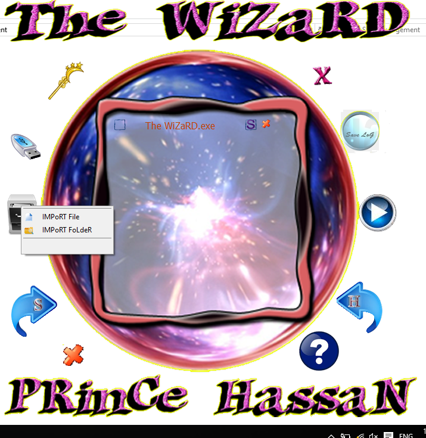

The WiZaRD
Hide / Show Your Files And Folders.
 Download
Download
Application is Used To Show Hidden Files/folders Which was hidden by user or a virus
it also allow you to hide files/folders just like viruses do
you can hide / show multi files at the same time very fast
there also flash icon button which adds all folders in attached flash memory
how to use:
1-add Files/Folders (from add Files/Folder button (the stash icon) or by dragging them into application
2-Set the operation (show hide ) from the Squares at left and right of the file/folder name in the middile of the application
3- Click Apply button (which look Like The Play Button To the right of the application)
4- You Get Log Saying If All Succeeded or some failed
5- we are done
you can hide / show multi files at the same time very fast
there also flash icon button which adds all folders in attached flash memory
how to use:
1-add Files/Folders (from add Files/Folder button (the stash icon) or by dragging them into application
2-Set the operation (show hide ) from the Squares at left and right of the file/folder name in the middile of the application
3- Click Apply button (which look Like The Play Button To the right of the application)
4- You Get Log Saying If All Succeeded or some failed
5- we are done
ScreenShots

- 